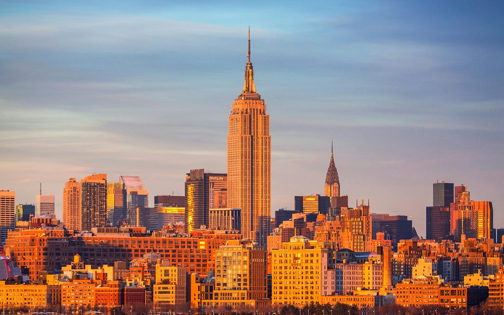
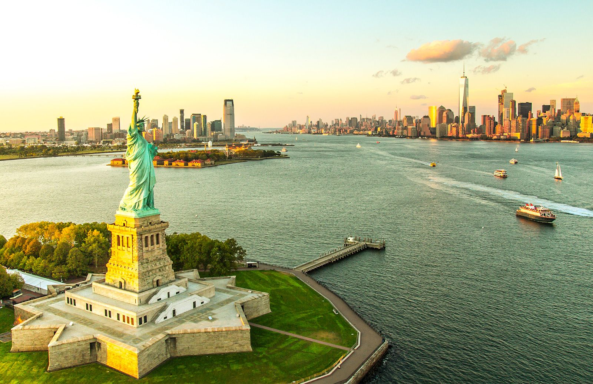
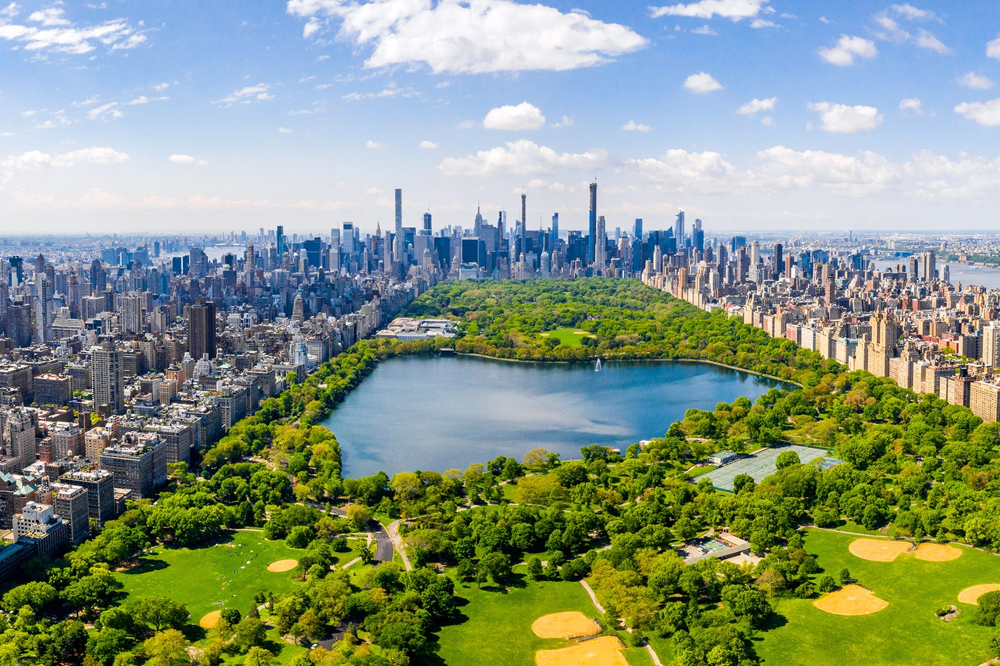
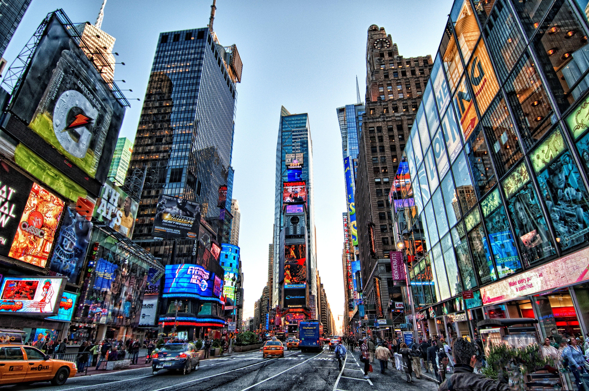
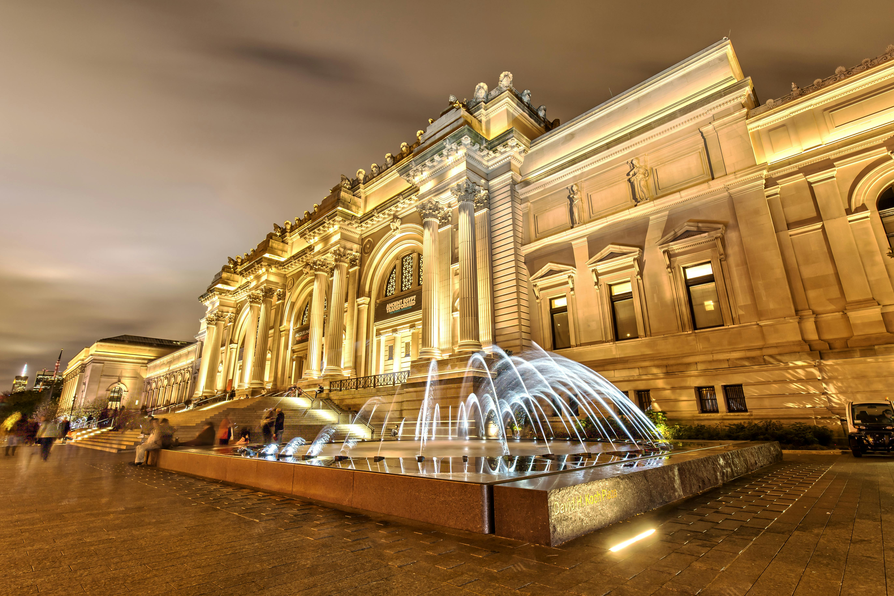

Az Empire State Building New York egyik legismertebb felhőkarcolója, amely a város ikonikus látképének része. 102 emeletes, és évtizedekig a világ legmagasabb épülete volt. A látogatók a kilátóteraszokról lenyűgöző panorámában gyönyörködhetnek Manhattanre és a környező területekre. Éjszaka a világítás színei különleges hangulatot adnak az épületnek, így a város egyik legnépszerűbb turisztikai célpontja.

A Szabadság-szobor (Statue of Liberty) az Egyesült Államok egyik legismertebb nemzeti jelképe, amely a szabadságot, a függetlenséget és az új kezdet lehetőségét szimbolizálja. A szobrot Franciaország ajándékozta Amerikának 1886-ban, az amerikai függetlenség századik évfordulója alkalmából. Liberty Islanden áll, New York kikötőjében, és már messziről üdvözli az érkezőket, ahogy egykor a bevándorlók millióit is köszöntötte.

A Central Park New York városának legnagyobb és legismertebb parkja, amely egy zöld oázist kínál Manhattan sűrű és nyüzsgő közepén. A parkban hatalmas gyepterületek, tavak, sétautak és erdős részek váltják egymást, így mindenki megtalálja a számára kedvelt kikapcsolódási formát. Népszerű helyszínei közé tartozik a Bethesda Terrace, a Central Park Zoo és a nagy tó, ahol csónakázni is lehet. A park egész évben programoknak, koncerteknek és szabadtéri rendezvényeknek ad otthont, így a helyiek és a turisták egyik kedvenc találkozóhelye.

A Szabadság-szobor (Statue of Liberty) az Egyesült Államok egyik legismertebb nemzeti jelképe, amely a szabadságot, a függetlenséget és az új kezdet lehetőségét szimbolizálja. A szobrot Franciaország ajándékozta Amerikának 1886-ban, az amerikai függetlenség századik évfordulója alkalmából. Liberty Islanden áll, New York kikötőjében, és már messziről üdvözli az érkezőket, ahogy egykor a bevándorlók millióit is köszöntötte.

A Metropolitan Museum of Art (The Met) az Egyesült Államok legnagyobb és egyik legfontosabb művészeti múzeuma, amely több mint ötvenezer év művészettörténetét mutatja be. Gyűjteménye hatalmas és rendkívül sokszínű: az ókori egyiptomi műkincsektől és középkori fegyverektől kezdve az európai mesterek festményein át egészen a modern és kortárs művészetig mindent felölel. A múzeum épülete maga is ikonikus, és naponta több ezer látogatót vonz, akik a világ minden tájáról érkeznek. A Met nemcsak kiállításoknak ad otthont, hanem kulturális programoknak, koncerteknek és oktatási eseményeknek is, így New York kulturális életének egyik központi helyszíne.